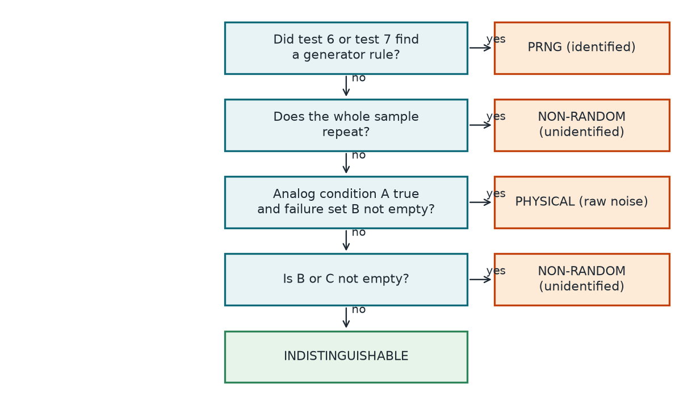

Chapter 14: Recognising Generators and Classifying Sources¶
Every other test says "this looks odd". This chapter is different: it tries to rebuild the generator from its output, and then judges what all the evidence together allows an honest examiner to say. Test 6 recovers the constants of a linear congruential generator or finds a lagged-Fibonacci relation. Test 7 uses the Berlekamp-Massey algorithm to find the shortest shift-register rule. Test 8 reads the other tests and gives one of four verdicts: PRNG (identified), PHYSICAL (raw noise), NON-RANDOM (unidentified) or INDISTINGUISHABLE. The chapter closes with the limits of such a verdict.
14.1 The four verdicts¶
The suite ends with one of four verdicts. Test 8, described below, gives the full rule; here is the meaning of each.
| Verdict | What it means |
|---|---|
| PRNG (identified) | The data followed a simple generator rule. An LCG or linear rule predicted later output exactly, or a lagged-Fibonacci relation held on more than 90% of 20,000 values. With stuck, looped, mostly constant and constant data excluded, this is strong evidence of a weak generator. |
| PHYSICAL (raw noise) | Tests fail, no generator was found, and the failures look like analog behaviour: drift, a smooth histogram or short-range correlation. |
| NON-RANDOM (unidentified) | Tests fail and neither explanation fits. Treat the source as defective until investigated. |
| INDISTINGUISHABLE | No generator was found and no test crossed the verdict line, except possibly test 12, which cannot change a verdict on its own. This could be a CSPRNG, a strong non-cryptographic PRNG, or a conditioned TRNG or QRNG. |
14.2 PRNG identification (test 6)¶
The idea in plain words. Every other test says "this looks odd". This one is a locksmith. It tries to rebuild the generator from its output. A rebuilt LCG then has to open the next 2000 doors in a row. A lagged-Fibonacci rule gets a different exam: it has no held-out doors, and it must fit more than 90% of the same 20,000 values it was found on. Either way the match is far beyond chance, so once stuck, looped and mostly constant data are excluded, it is strong evidence of a weak generator.
Example 14.2: PRNG identification
Here is a toy linear congruential generator (LCG), with \(m = 251\) (prime). We see the outputs 10, 86, 84. The differences are 76 and 249 modulo 251. The inverse of 76 modulo 251 is 109, so \(a = 249 \times 109 \bmod 251 = 33\), and \(c = 86 - 33 \times 10 \bmod 251 = 7\). Now we predict: 18, 99, 11, 119, 169, and all are correct. Guessing five outputs by luck has a chance of about \(10^{-12}\).
Hidden bits are harder, but still fall. Take a toy with \(m = 2^{16}\), \(a = 25173\), \(c = 13849\) that shows only the top 8 bits: 48, 11, 43, 82, 166, 106. That leaves 256 possible starting states. After one more output only 2 survive, and after two more only 1. For larger hidden parts we use lattice reduction. As a toy run, we called our lattice routine on an LCG with \(m = 2^{31}\), \(a = 1103515245\), \(c = 12345\) showing only its top 8 bits, and from the 4 outputs 14, 27, 134, 209 it recovered the exact 31-bit state, 123456789.
The mathematics. An LCG computes \(x_{i+1} = a x_i + c \pmod{m}\). Three outputs give the constants:
For a truncated LCG with known constants, each output pins down a window of state bits, \(y_i = \lfloor x_i / 2^s \rfloor\). Unrolling the recurrence gives a problem with one unknown:
So the vector with entries \(y_i 2^s + 2^{s-1} - c_i\) lies close to the lattice generated by \((1, a, a^2, \dots)\) and multiples of \(m\). LLL reduction (a standard algorithm that swaps a lattice's description for one with short, nearly square vectors) followed by Babai rounding (which uses those vectors to step to a nearby lattice point) finds the closest point. If \(s\) is at most 24, we use brute force on the hidden bits instead.
Lagged-Fibonacci generators are found by a relation search over lags up to 64:
- \(a, c, m\): the multiplier, increment and modulus of the LCG.
- \(s\): the number of hidden low bits.
- \(x_i, y_i\): the full state and the visible output at step \(i\).
- \(j, k, M\): the two lags, with \(j < k\), and the modulus (256 for bytes, \(2^{32}\) for words).
- \(\varepsilon\): a carry or borrow of 1. Generators that drop low bits from their output, such as glibc random(), can land one away from the exact sum, so we allow for it.
This is not a hypothesis test. The p-value is literally 0 (found) or 1 (not found). An LCG candidate must predict about 2000 outputs exactly, and the chance that a wrong candidate does so on random data is at most \(2^{-2000}\). A lagged-Fibonacci relation is not tried on held-out output. It must hold for more than 90% of the same 20,000 values it was searched on, when chance gives \(3/M\), and by a Chernoff bound (a standard limit on how far a count can stray from its average) that has \(p < 10^{-10000}\). Constant data and loops of 4096 bytes or less fit many recurrences by accident, so test 6 does not accept them. The lagged-Fibonacci search also skips any view in which one value fills more than half the positions.
What it catches and misses. False alarms: not measured empirically, because the bound above is far below anything 120 samples could see. It flagged 18 of 59, all weak generators (9 generators, two seeds each): .NET, glibc random(), both java.util.Random forms, the Numerical Recipes LCG (words and top byte), MINSTD, MSVC rand() and RANDU. For five of them (.NET, glibc, both Java forms and the top-byte LCG), not a single statistical test said anything on either seed. It misses what is not in its library: PCG, xoshiro, and any truncated LCG with unknown constants.
14.3 Linear structure (test 7)¶
The idea in plain words. Many fast generators, including the famous Mersenne Twister, are built only from XOR and shifts. That makes each output bit a fixed XOR of earlier bits, like a long necklace knitted by a short rule. The Berlekamp-Massey algorithm finds the shortest such rule. Real randomness needs a rule about half as long as the string itself, so a short rule that keeps predicting is strong evidence of a generator of this kind.
Example 14.3: Linear structure
Take the shift register \(x_i = x_{i-3} \oplus x_{i-4}\) starting from 1, 0, 0, 0. It produces 1, 0, 0, 0, 1, 0, 0, 1, 1, 0, 1, 0, 1, 1, 1, 1. Feed these 16 bits to Berlekamp-Massey and it reports linear complexity \(L = 4\) and recovers the rule. That rule then predicts the next 8 bits, 0, 0, 0, 1, 0, 0, 1, 1, and gets 8 of 8. A random 16-bit string we tried gave \(L = 8\), which is half its length, as expected. And a random 44,000-bit string gave \(L = 22{,}001\), well above the cut-off of 21,936.
The mathematics. Berlekamp-Massey finds the smallest \(L\) with
and we count a lane only if all of these hold, where the first three rule out mostly constant, stuck and looped lanes:
and the recurrence must predict the next 2000 bits exactly.
- \(x_i\): the bits of one lane.
- \(c_j\): the recovered coefficients, each 0 or 1.
- \(L\): the linear complexity. For random bits it sits very close to \(n/2\).
- \(n\): the training length, 44,000 bits, so the cut-off is \(L < 21{,}936\).
We scan up to 105 lanes, depending on sample size (9 below 184,000 bytes, 41 below 368,000): the whole bit stream, each of the 8 bit positions of a byte, each of the 32 positions of a 32-bit word and each of the 64 positions of a 64-bit word. As in test 6, the p-value is 0 or 1. For random data, the chance that a recurrence predicts 2000 further bits is at most \(2^{-2000}\) per candidate.
What it catches and misses. False alarms: not measured empirically, for the same reason as test 6. It flagged 16 of 59: 14 weak generators and the real-world GFSR4 and MT19937 files. For MT19937 in bytes, xoroshiro128+, and those two real files, it was the only test to fire. (The same holds on one seed each for MT19937 words and xorshift128+.) It misses anything non-linear (PCG, xoshiro256**, the CSPRNGs), and any linear generator whose complexity is above 21,936, which would need a longer training window. Sample too short for a lane? That lane is skipped.
One trap we found in review: a stuck bit also has a very short rule, and so does data that simply loops. Neither means a generator made the data, so a stuck bit or a 12-bit reading stored in a 16-bit word would have been called a proven PRNG. Now a lane with \(L < 16\) does not count, nor does a lane that literally repeats with a period up to \(4L\), because a real shift register repeats far later than that. A lane whose share of ones falls outside 0.25 to 0.75 is skipped too, because a mostly constant lane also obeys a short rule. If the whole sample repeats, the test reports the period instead.
14.4 Source classification (test 8)¶
The idea in plain words. This is the judge rather than another witness. Tests 6 and 7 are the closest thing to a confession: once stuck, looped and mostly constant data are ruled out, a matching generator rule is strong evidence, so the judge hears it first. Otherwise, the judge asks whether the witnesses report trouble, and if so, whether the trouble looks like analog hardware or just looks wrong. If nobody reports anything, the honest ruling is "we cannot tell", not "innocent".
Example 14.4: Source classification
Three real rows from our power run, all compared against the line \(0.01/18 = 0.000556\):
| Sample | Key p-values | Outcome |
|---|---|---|
| os.urandom, seed 2 | test 12: 0.0048, H1: 0.0016 | Both are flagged at 0.01, but neither crosses 0.000556, so the verdict is INDISTINGUISHABLE. |
| Simulated drifting bits, seed 1 | test 3: \(1.3 \times 10^{-8}\), test 4: \(9.1 \times 10^{-12}\), test 5: \(5.7 \times 10^{-169}\), test 11: 0 | No generator. Test 11 fails, so the analog condition is true. The verdict is PHYSICAL. |
| Stateless SHA-256 conditioner | test 2: \(9.5 \times 10^{-188}\), test 5: \(1.6 \times 10^{-60}\), test 10: 0 | Tests fail, but 11 and 12 pass and test 3 passes. There is no analog sign, so the verdict is NON-RANDOM. |
The mathematics. There is no p-value here. Test 8 applies a rule to the others. First it sets the family-wise line:
A statistical test counts as failed for the verdict only if \(p < \tau\). Then the first matching line wins:
- \(K\): the number of statistical tests (all except 6, 7 and 8).
- \(A\): the analog condition. It is true if test 12 fails, or test 11 fails, or test 3 fails while test 5 passes.
- \(B\): the set of failures among tests 1, 2, 3, 4, 5, 9, 10, 11 and 13.
- \(C\): the set of failures among U1 to U6, H1 and H2.
Notice that test 12 is in \(A\) but not in \(B\). On its own it cannot change a verdict; it only explains other failures. Notice too that the analog condition is a judgement, not a theorem. It rests on the observation that algorithmic flaws rarely look like smooth histograms and slow drift.
What it catches and misses. False alarms: at the verdict line, 0 of the 120 good samples failed any statistical test, whereas 8 of the 120 tripped something at 0.01. (Tests 6 and 7 were not part of that calibration run.) Across the power run, 32 samples came out PRNG (identified), 15 INDISTINGUISHABLE, 10 PHYSICAL and 2 NON-RANDOM. Under the labels first set, 57 of 58 got the expected verdict. One hash conditioner with repeating input was then relabelled defective, which gives 58 of 58. Parity, with no expected label, came out NON-RANDOM because it repeats every 8,000 bytes. The labels are ones we set, based on what the suite is designed to conclude. That is a good result on a set we built and know, not a promise on sources we have not seen.
The limits matter. PHYSICAL means analog non-idealities were seen. Our six simulated physics samples were run from a PRNG and still got PHYSICAL, so this is evidence about the data, not proof of origin. Strong non-cryptographic generators get INDISTINGUISHABLE. And INDISTINGUISHABLE is never proof of quality.

14.5 Summary¶
- Test 6 solves for the constants of an LCG from three outputs, uses lattice reduction (LLL and Babai rounding) for truncated output, and finds lagged-Fibonacci relations; test 7 finds the shortest linear recurrence over GF(2) with Berlekamp-Massey.
- These tests are not hypothesis tests: the p-value is 0 or 1. A match must predict 2000 further outputs, which has probability at most \(2^{-2000}\) on random data; stuck, looped and mostly constant data are excluded.
- Test 8 applies a rule to the other tests, with the family-wise line \(\tau=0.01/K\approx0.000556\) for \(K=18\) statistical tests. The first matching line of the rule wins.
- The four verdicts are PRNG (identified), PHYSICAL (raw noise), NON-RANDOM (unidentified) and INDISTINGUISHABLE. INDISTINGUISHABLE is never proof of quality, and PHYSICAL is evidence about the data, not proof of origin.
14.6 Exercises¶
-
A toy LCG modulo \(m=101\) produces 5, 38, 67. Recover \(a\) and \(c\), and predict the next two outputs.
Answer
\(a=(x_2-x_1)(x_1-x_0)^{-1}\bmod m=29\times33^{-1}\). Since \(33\times49=1617=16\times101+1\), \(33^{-1}=49\), so \(a=29\times49=1421\equiv7\pmod{101}\). Then \(c=x_1-ax_0=38-35=3\). The next outputs are \(7\times67+3=472\equiv68\) and \(7\times68+3=479\equiv75\).
-
A random 16-bit string and the string produced by \(x_i=x_{i-3}\oplus x_{i-4}\) are both given to Berlekamp-Massey. What linear complexities do you expect?
Answer
The shift-register string has linear complexity \(L=4\), and the recovered rule predicts later bits exactly. A random 16-bit string has complexity close to \(n/2=8\).
-
Why does test 7 reject lanes with a very short linear complexity if they also repeat with a period up to \(4L\), or have a share of ones outside 0.25 to 0.75?
Answer
A stuck bit, a mostly constant lane or data that simply loops all have a very short rule, but none of that means a generator produced the data. A real shift register repeats far later than \(4L\). Without these conditions a stuck bit or a 12-bit reading stored in a 16-bit word would have been called a proven PRNG.
-
With \(K=18\) statistical tests and a family-wise target of 0.01, what is the verdict line \(\tau\)? Why is it needed?
Answer
\(\tau=0.01/18=0.000556\). With 18 independent tests at 0.01, a perfect source trips at least one with probability \(1-0.99^{18}=16.5\%\) (in calibration 11 of 120 good samples did). A failure counts towards the verdict only if \(p<\tau\), so that the union bound keeps the false-verdict rate at about 0.01.
-
A sample passes every test and test 8 reports INDISTINGUISHABLE. A manager concludes that the source is a quantum generator. Explain the error.
Answer
INDISTINGUISHABLE only says that no generator rule was found and no test crossed the verdict line. It could equally be a CSPRNG, a strong non-cryptographic PRNG, or a conditioned physical source. The verdict is never proof of quality or of origin: to tell these apart you need the design and the raw data.